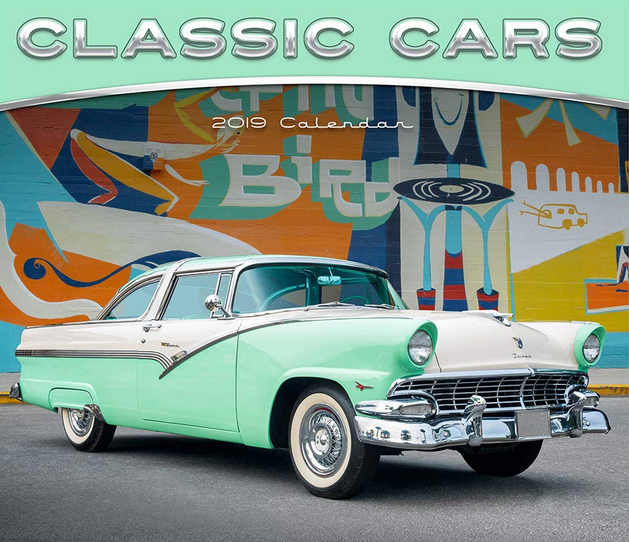
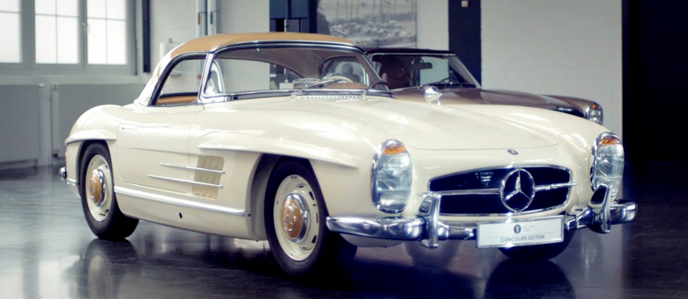

classic cars

A classic car is an older automobile, typically 20 years or older, though definitions vary.
The common theme is of an older car of sufficient historical interest to be collectable and
worth preserving or restoring rather than scrapping.
Organizations such as the Classic Car Club of America (CCCA) and the Antique Automobile Club
of America (AACA) maintain lists of eligible unmodified cars that are called "classic". These are
described as "fine" or "distinctive" automobile, either American or foreign built, produced between 1915 and 1948.
The CCCA is dedicated to the preservation and enjoyment of
select cars that "are distinguished by their respective fine design,
, high engineering standards and superior workmanship.
Classic car styling

There was a worldwide change in styling trends in the immediate years
after the end of World War II. The 1946 Crosley and Kaiser-Frazer, for example, changed the traditional discrete replaceable-fender treatment. From this point on
automobiles of all kinds became envelope bodies in basic plan. The CCCA term, "antique car" has been confined to "the functionally traditional designs
of the earlier period" (mostly pre-war). They tended to have removable fenders, trunk
headlights, and a usual vertical grill treatment. In a large vehicle, such as a Duesenberg, Pierce-Arrow, or in a smaller form, the MG TC with traditional
lines, might typify the CCCA term. Another vehicle might be a classic example of a later period but not a car from the "classic period of design", in the opinion of the CCCA.